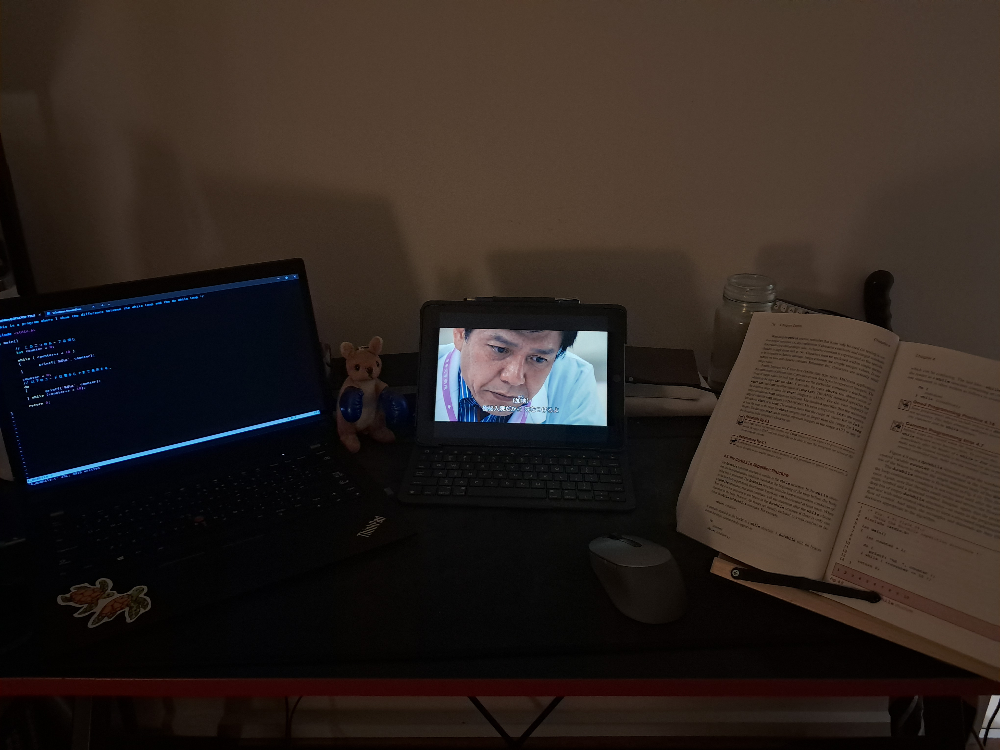
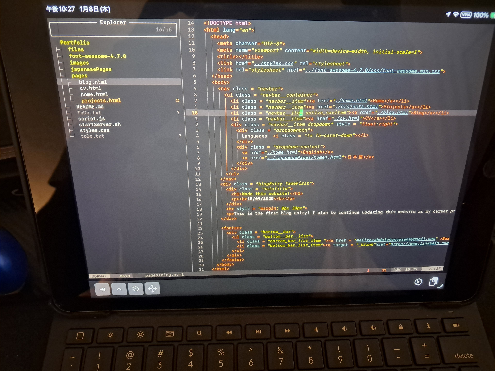

08/01/26
This is the second blog entry!! I have recently been reviewing C++ using a really nice book that explains a lot of basics that I wasn't really thinking about before.


In my setup (left) I am using vim to code C (While watching ドクターX on my Ipad). I was using nvim until now to program and make my projects, but I decided that I should also give vim a try! So far it's been a really nice experience!! It's so much faster than using VS code in terms of movement and control, but I will have to add my own snippets for it to be a better experience. It is wonderful though. I am writing this particular paragraph using vim, because my autocomplete in nvim keeps giving me too many suggestions any time I write something.
The picture on the right is my new SSH setup for my ipad! I can now code using vim and nvim with my Ipad anywhere, on the go. I have been using this setup for quite a while and it is very convenient. I basically use a mesh VPN like Tailscale to get my Ipad, and WSL (ubuntu) on the same network. Then I use an SSH client such as termius, or iSH to SSH into my WSL.
It's really fun finding new ways to make my life more convenient! Maybe I'm lazy, or maybe I'm just an Engineer (lol).
15/09/2025
This is the first blog entry! I plan to continue updating this website as my career progresses!